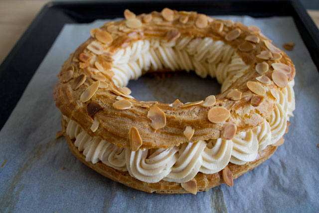

The Paris-Brest is a classic French dessert made with a ring of choux pastry, typically filled with a rich praline-flavored cream. It was created in 1910 by a pastry chef to commemorate the Paris-Brest-Paris bicycle race, with its round, wheel-like shape symbolizing a bike tire.
The choux pastry is light and airy, baked until golden and topped with sliced almonds for added crunch. The filling is traditionally a smooth praline cream, often made by folding whipped cream into a praline-flavored pastry cream for a luscious, nutty taste. Once assembled, the pastry is dusted with powdered sugar. The Paris-Brest is beloved for its delicious balance of textures and flavors, combining a delicate crunch with a creamy, nutty sweetness.
Here’s a classic recipe for Paris-Brest, a French pastry made with choux dough and a praline cream filling. It was originally created in 1910 to celebrate the Paris-Brest-Paris bicycle race and is shaped like a wheel to symbolize the bike tires. This Paris-Brest pastry is light, creamy, and packed with the nutty flavor of praline. Perfect for a celebration or a sweet treat!
Paris-Brest Recipe
Ingredients
For the Choux Pastry:
- 1 cup (240 ml) water
- 1/2 cup (115 g) unsalted butter, cut into pieces
- 1/4 teaspoon salt
- 1 cup (125 g) all-purpose flour
- 4 large eggs
For the Praline Cream Filling:
- 1 cup (240 ml) heavy cream
- 1 cup (240 ml) milk
- 1/2 cup (100 g) granulated sugar
- 4 large egg yolks
- 1/4 cup (30 g) cornstarch
- 2 tablespoons (30 g) unsalted butter
- 1/2 cup (125 g) praline paste (hazelnut or almond)
- 1/2 cup (120 ml) heavy cream, whipped (for folding in later)
For Garnish:
- Powdered sugar, for dusting
- Sliced almonds, for sprinkling

Paris-Brest cake
Instructions
Prepare the Choux Pastry:
- Preheat the oven to 400°F (200°C). Line a baking sheet with parchment paper. Draw an 8-inch circle on the parchment to use as a guide and flip the paper over.
- In a medium saucepan, combine water, butter, and salt. Bring to a boil over medium heat.
- Once boiling, add the flour all at once, stirring vigorously with a wooden spoon until the mixture forms a ball and pulls away from the sides of the pan.
- Remove from heat and let the dough cool for about 5 minutes.
- Add eggs one at a time, mixing thoroughly after each addition until the dough is smooth and shiny.
- Transfer the choux dough into a piping bag fitted with a large round or star tip.
- Pipe a ring of dough onto the parchment paper, following the drawn circle. Then pipe another ring on the inside of the first ring, followed by a third layer on top.
- Sprinkle with sliced almonds.
- Bake for 20–25 minutes or until puffed and golden brown. Turn off the oven, leaving the door slightly open, and let the choux pastry cool inside the oven for 10 minutes to dry out. Remove from the oven and let cool completely.
Assemble the Paris-Brest:
- Slice the choux pastry ring in half horizontally.
- Pipe or spoon the praline cream onto the bottom half of the choux ring.
- Place the top half of the choux ring over the filling.
- Dust with powdered sugar and sprinkle with extra sliced almonds if desired.
Serve and Enjoy:
Serve immediately, or refrigerate until ready to serve. The Paris-Brest is best enjoyed fresh!